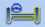
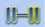

Работа с системой
Работа с системой JOSAM truckaligner 180 / II, вместе с JOSAM Homebase, установленным на ПК, представляет собой измерительное оборудование, предназначенное для выравнивания колес.
JOSAM truckaligner 180 / II состоит из программного обеспечения JOSAM Homebase, двух измерительных головок, четырех весов и другого оборудования, которые используются для сборки системы на транспортном средстве. Измерительные головки питаются от батареи и работают в течение обычного рабочего дня.
JOSAM truckaligner 180 / II использует передовые лазерные технологии и поэтому дает точные и повторяемые измерения.
JOSAM truckaligner 180 / II также использует радиосвязь Bluetooth® между ПК и измерительными головками.
JOSAM truckaligner 180 / II является портативным и может выполнять свои измерения на транспортном средстве автономно. Результаты измерений сохраняются на жестком диске ПК и могут быть распечатаны, когда ПК подключен к принтеру.
Примечание! Для плагинов truckaligner и i-track обязательно отключите варианты энергосбережения, так как он может заблокировать порт USB, используемый для подключения Bluetooth.
Примечание! Убедитесь, что ПК использует правильный модуль Bluetooth и драйверы для обеспечения связи Bluetooth.
Примечание! Убедитесь, что модуль Bluetooth может свободно общаться, не размещайте его внутри шкафа, всегда снаружи.
Подключение / Отключение
Начните с включения двух измерительных головок. Затем установить подключение с измерительными головками в программе JOSAM truckaligner 180/II
Войдите в настройки.
В настройках вы найдете настройки радио (Bluetooth), где вы можете искать, выбирать и подключать измерительные головки. Примечание: иногда вам может понадобиться выполнить поиск более одного раза, чтобы найти измерительные головки.
Короткие шаги для выполнения измерения
- Сначала выполните «Подготовку к измерению», прежде чем продолжить любое измерение.
- Выберите «Быстрый старт» в JOSAM Homebase, чтобы начать измерение без дополнительной информации или создать рабочий заказ в JOSAM Homebase со всеми необходимыми опциями. См. Руководство JOSAM Homebase для получения дополнительной информации.
- Установите все оборудование на автомобиль.
- выполнить калибровку тех колес на той оси, которые вы хотите измерить.
-
Выберите, если вы хотите измерить управляемую или неуправляемую ось.
- Следуйте инструкциям на экране, чтобы выполнить полное измерение перед настройкой.
- Отрегулируйте выравнивание колес и осей следя за измерениями в программе
- Выполните измерение после регулировки.
Измерительная головка JT611 / JT631 / JT691
- A On / Off
- B Защитная крышка
- C приемник
- D Кнопка измерения
- E Запирающее устройство
- F Стопорный винт
- G Стопорный винт для стабилизатора
- H Вход для зарядки
- I Вход для зарядки(Электронного уровня)
- J Стабилизатор
- К Измерительная кнопка
- L Дисплей
- M BlueTooth
- N Внешний пузырь (только JT611 / JT631)
- O Внутренний пузырь (только JT611 / JT631)
Измерительная головка включается кнопкой ON / OFF A и должна оставаться включенной. Измерительная головка должна быть подключена к зарядному устройству в точке H , когда она не используется.
В нижней части измерительной головки имеется защитная крышка B . Перед выполнением любого измерения необходимо снять крышку. Когда крышка будет снята, лазер достигнет шкал, которые будут отражать лазерный луч на приемники C с обеих сторон измерительной головки.
Если используется электронный уровень JT604 / JT616 , его следует подключить к разъему I в нижней части стабилизатора J , прежде чем проводить измерения. Электронный уровень может быть присоединен к любой из двух используемых измерительных головок.
В верхней части измерительных головок JT611 / JT631 имеется дисплей L, который будет отображать состояние измерения, а также отображать измеренные значения. На всех измерительных головках есть три светодиода, зеленый, желтый, зеленый. Когда измерительная головка включена, все три светодиода загораются, и через некоторое время они выключаются, указывая на то, что измерительная головка готова к подключению. (См. Дальнейшую светодиодную индикацию ниже.)
Стабилизатор J на головке выступает в качестве устройства, чтобы уменьшить колебание , когда колесо поворачивается, и всегда смотрел на колеса оси адаптера с стопорным винтом G .
Кнопка K на стабилизаторе используется для измерения схождения и развала.
На измерительной головке JT611 / JT631 установлены два пузырька, чтобы обеспечить ее горизонтальное положение. Внутренний пузырь O указывает горизонтальное положение самой головки, а внешний пузырь N указывает вертикальное положение. В нижней части головы есть третий пузырь, который используется при калибровке пальца.
Блокирующее устройство E гарантирует , что головка закреплена на вал колеса адаптера , если это необходимо.
LED Дисплей
| Запуск: | все светодиоды включены и выключается через 5-10 секунд. Если желтый светодиод не гаснет через 5-10 секунд, значит, проблема в системе связи. |
Во время измерения схождения:
| Жёлтый светодиод включен | Лазерный двигатель включен и вращается обычно. |
| Мигают оба зеленых светодиода. | Обозначает, что связь установлена с обоих сторон где мигает светодиод. |
| Мигает только один зеленый светодиод. | Связь установлена только на той же стороне где светодиод |
| Зеленый светодиод не включается | Измерительная головка вообще не видит никакой шкалы. Проверьте крышку лазера и высоту весов. |
Во время измерения развала:
| Оба зеленых светодиода загораются | Одновременно когда нет внешнего
электронный уровень подключен. Сначала левый зеленый светодиод, а через мгновение - правый зеленый светодиод, когда подключен внешний электронный уровень. |
Поиск неисправностей
Если есть какие-то проблемы, есть несколько альтернатив, которые можно использовать для диагностики системы в зависимости от типа проблемы.
В меню настройки вы можете использовать диагностику , чтобы проверить систему. Для калибровки измерительных головок. перейдите к
Чистка
Если желтый свет не работает или зеленый свет мигает медленнее чем обычно, то измерительная головка не функционирует, как следует.
Одна из причин этого может быть потому, что зеркало стало грязным и его нужно очистить. Зеркало находится в нижней части измерительной головки, под круглой защитной крышкой.
Снимите защитную крышку (4 винта), а затем очистите защитное стекло перед зеркалом.
Примечание: используйте воду и мыло, а не любой химический чистящий материал. После чистки измерительной головки, нужно проверить и при необходимости откалибровать её.
Технические данные и информация
Каждая измерительная головка помечена серийным номером, годом изготовления и символом СЕ, который подтверждает, что продукт одобренный в соответствии с LVD и EMC директивы, EN50081-2, EN50082-2. Также есть знак, который говорит, что батареи экологически небезопасны.
| Светочувствительность: | 100.000 люкс |
| Лазер: | класс 2 |
| Время работы: | 8 часов |
| Время зарядки: | 7 часов |
| Диапозон Кастера: | +/- 20 градусов |
| Диапазон развала: | от -5 до +10 градусов |
| Максимальный диапазон поворота: | 60 градусов |
| Расстояние до шкалы | 0 - 15 метров |
| Точность схождения: | 0,25 мм / м |
| Точность развала: | +/- 3 мин |